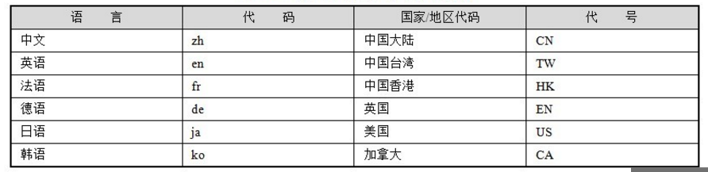
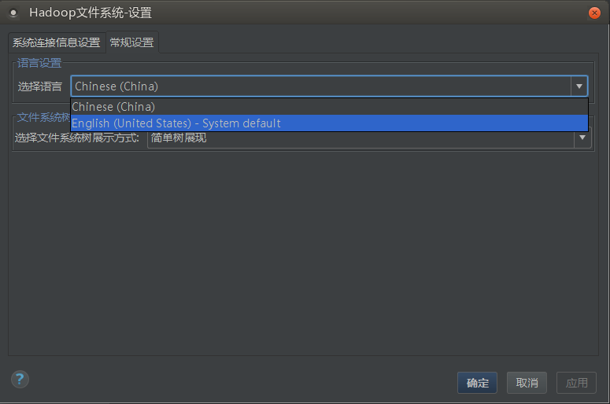

Hadoop-IntelliJ-Plugin 的国际化多语言支持比较简单，直接使用了Java的本地化实现机制。先简单的介绍一下Java的本地化方法。
本地化介绍
“国际化信息”也称为“本地化信息”，一般需要两个条件才可以确定一个特定类型的本地化信息，它们分别是“语言类型”和“国家/地区的类型”。如中文本地化信息既有中国大陆地区的中文，又有中国台湾、中国香港地区的中文，还有新加坡地区的中文。
Java通过java.util.Locale类表示一个本地化对象，它允许通过语言参数和国家/地区参数创建一个确定的本地化对象。语言参数使用ISO标准语言代码表示，这些代码是由ISO-639标准定义的，每一种语言由两个小写字母表示。在许多网站上都可以找到这些代码的完整列表，下面的网址是提供了标准语言代码的信息：http://www.loc.gov/standards/iso639-2/php/English_list.php。
国家/地区参数也由标准的ISO国家/地区代码表示，这些代码是由ISO-3166标准定义的，每个国家/地区由两个大写字母表示。用户可以从以下网址查看ISO-3166的标准代码：http://www.iso.ch/iso/en/prods-services/iso3166ma/02iso-3166-code-lists/list-en1.html。
下表给出了一些语言和国家/地区的标准代码：

Java.util.Locale类是表示语言和国家/地区信息的本地化类，它是创建国际化应用的基础。如下面的例子：
|
Locale locale1 = new Locale("zh","CN");
Locale locale2 = new Locale("zh");
Locale locale3 = Locale.CHINA;
Locale locale4 = Locale.CHINESE;
|
如果有些系统需要支持多种语言设置，那就要准备对应的语言资源文件，并以规范的方式进行命名。国际化资源文件的命名规范规定资源名称采用以下的方式进行命名：
<资源名>_<语言代码>_<国家/地区代码>.properties
其中，语言代码和国家/地区代码都是可选的。<资源名>.properties命名的国际化资源文件是默认的资源文件，即某个本地化类型在系统中找不到对应的资源文件，就采用这个默认的资源文件。<资源名>_<语言代码>.properties命名的国际化资源文件是某一语言默认的资源文件，即某个本地化类型在系统中找不到精确匹配的资源文件，将采用相应语言默认的资源文件。拿我们插件的项目来说明，插件项目目前只支持简体中文和英文两种:
HadoopNavigator_en_US.properties 表示的是英文语言资源文件
HadoopNavigator_zh_CN.properties 表示的是简体中文语言资源文件
英文语言信息在资源文件以属性名/值的方式表示：
1
2
3
4
5
6
7
8
9
10
11
12
13
14
15
16
17
18
19
20
21
22
| systemText=Hadoop FileSystem
settingText=Setting
back=Back
forward=Forward
expandAll=Expand All
collapseAll=Collapse All
showObjectProperties=Show Object Properties
hideObjectProperties=Hide Object Properties
connectAction=Connect
disconnectAction=DisConnect
refreshObjectsStatusAction=Refresh
CreateDirectoryAction=Create Directory
deleteDirectoryOrFileAction=Delete Directory
downDirectoryOrFileAction=Down Directory Or File
refreshDirectoryAction=Refresh
uploadDirectoryAction=Upload Directory
uploadFileAction=Upload File
viewFileAction=View
objectTypeDirectory=Directory
objectTypeFile=File
directoryPath=Directory Path
directoryOwner=Directory Owner
|
中文语言信息健/值：
1
2
3
4
5
6
7
8
9
10
11
12
13
14
15
16
17
18
19
20
21
22
23
24
| systemText=Hadoop\u6587\u4ef6\u7cfb\u7edf
settingText=\u8bbe\u7f6e
back=\u4e0a\u4e00\u8282\u70b9
forward=\u4e0b\u4e00\u8282\u70b9
expandAll=\u5168\u90e8\u5c55\u5f00
collapseAll=\u5168\u90e8\u6298\u53e0
showObjectProperties=\u663e\u793a\u5bf9\u8c61\u5c5e\u6027
hideObjectProperties=\u9690\u85cf\u5bf9\u8c61\u5c5e\u6027
connectAction=\u8fde\u63a5
disconnectAction=\u65ad\u5f00\u8fde\u63a5
refreshObjectsStatusAction=\u5237\u65b0
CreateDirectoryAction=\u521b\u5efa\u76ee\u5f55
deleteDirectoryOrFileAction=\u5220\u9664
downDirectoryOrFileAction=\u4e0b\u8f7d
refreshDirectoryAction=\u5237\u65b0
uploadDirectoryAction=\u4e0a\u4f20\u76ee\u5f55
uploadFileAction=\u4e0a\u4f20\u6587\u4ef6
viewFileAction=\u67e5\u770b\u6587\u4ef6
objectTypeDirectory=\u76ee\u5f55
objectTypeFile=\u6587\u4ef6
directoryPath=\u76ee\u5f55\u8def\u5f84
directoryOwner=\u76ee\u5f55\u6240\u6709\u8005
directoryPermission=\u76ee\u5f55\u6743\u9650
directoryGroup=\u76ee\u5f55\u6240\u5728\u7684
|
本地化不同的同一资源文件，虽然属性值各不相同，但属性名却是相同的，这样应用程序就可以通过Locale对象和属性名精确调用到某个具体的属性值了。
中文的本地化资源文件内容采用了特殊的编码表示中文字符，这是因为资源文件对文件内容有严格的要求：只能包含ASCII字符。所以必须将非ASCII字符的内容转换为Unicode代码的表示方式。如上面中文的HadoopNavigator_zh_CN.properties资源文件的属性值中文字符串对应的Unicode代码串。
如果在应用开发时，直接采用Unicode代码编辑资源文件是很不方便的，所以，通常我们直接使用正常的方式编写资源文件，在测试或部署时再采用工具进行转换。JDK在bin目录下为我们提供了一个完成此项功能的native2ascii工具，它可以将中文字符的资源文件转换为Unicode代码格式的文件，命令格式如下：
native2ascii [-reverse] [-encoding 编码] [输入文件 [输出文件]]
对于语言资源文件的读取解析，Java为我们提供了用于加载本地化资源文件的方便类java.util.ResourceBoundle。ResourceBoundle为加载及访问资源文件提供便捷的操作，下面的语句从相对于类路径的目录中加载一个名为resource的本地化资源文件：
|
public void setResourceBundle(Locale locale)
{
resourceBundle = ResourceBundle.getBundle("HadoopNavigator", locale);
}
|
注意资源文件的路径。ResourceBundle在加载资源时，如果指定的本地化资源文件不存在，它按以下顺序尝试加载其他的资源：本地系统默认本地化对象对应的资源→默认的资源。
插件的国际化多语言设计和实现
本地化语言设置管理类 LocalLanguageManager
定义一个本地化语言设置管理类 LocalLanguageManager ，继承ApplicationComponent，Application级别插件，在IDEA启动时读取操作系统默认的语言类进行相关设置。该类还管理语言设置更改后的事件通知。当用户更改了界面UI的语言设置，会触发LanguageSettingListener ，重新加载语言资源文件，并且通知相关组件，需要调整界面语言。LocalLanguageManager 类代码如下：
1
2
3
4
5
6
7
8
9
10
11
12
13
14
15
16
17
18
19
20
21
22
23
24
25
26
27
28
29
30
31
32
33
34
35
36
37
38
39
40
41
42
43
44
45
46
47
48
49
50
51
52
53
54
55
56
57
58
59
60
61
62
63
64
65
66
67
68
69
70
71
72
73
74
75
76
77
78
79
80
81
|
public class LocaleLanguageManager implements ApplicationComponent
{
ResourceBundle resourceBundle=null;
public static LocaleLanguageManager getInstance()
{
return ApplicationManager.getApplication().getComponent(LocaleLanguageManager.class);
}
public ResourceBundle getResourceBundle()
{
return resourceBundle;
}
public void setResourceBundle(Locale locale)
{
resourceBundle = ResourceBundle.getBundle("HadoopNavigator", locale);
}
public void initComponent()
{
Locale localeDefault = Locale.getDefault();
setResourceBundle(localeDefault);
EventUtil.subscribe(null, ProjectLifecycleListener.TOPIC, this.projectLifecycleListener);
}
public void disposeComponent()
{
}
@NotNull
public String getComponentName()
{
return "HadoopNavigator.LocaleLanguageManager";
}
private ProjectLifecycleListener projectLifecycleListener = new ProjectLifecycleListener.Adapter()
{
Project project;
public void projectComponentsInitialized(@NotNull Project project)
{
this.project=project;
EventUtil.subscribe(project,null, LanguageSettingsListener.TOPIC, this.languageSettingsListener);
}
private LanguageSettingsListener languageSettingsListener = new LanguageSettingsListener()
{
@Override
public void LanguageChanged(Locale locale)
{
resourceBundle = ResourceBundle.getBundle("HadoopNavigator", locale);
final ConnectionBundle connectionBundle = ConnectionManager.getInstance(project).getConnectionBundle();
for(ConnectionHandler connectionHandler :connectionBundle.getConnectionHandlers())
{
if (connectionHandler != null)
{
connectionHandler.getObjectBundle().refreshTreeChildren();
}
}
EventUtil.notify(project, UpdateLanguageListener.TOPIC).UpdateLanguage();
}
};
};
}
|
国际化语言设置UI设计
(1)、RegionSetting类，国际化语言设置类，实现IDEA 配置Configuration接口，可以从配置中读取当前设置的语言，也可以将当前设置的语言写入XML。代码如下：
1
2
3
4
5
6
7
8
9
10
11
12
13
14
15
16
17
18
19
20
21
22
23
24
25
26
27
28
29
30
31
32
33
34
35
36
37
38
39
40
41
42
43
44
45
46
47
48
49
50
51
52
53
54
55
56
57
58
59
60
61
62
63
64
65
66
67
68
69
70
71
72
73
74
75
76
77
78
79
80
81
82
83
84
85
86
87
88
89
90
91
92
93
94
95
|
public class RegionalSettings extends Configuration<RegionalSettingsEditorForm>
{
private Locale locale = Locale.getDefault();
private Project project=null;
public void setProject(Project project)
{
this.project = project;
}
public static RegionalSettings getInstance(Project project)
{
return GeneralProjectSettings.getInstance(project).getRegionalSettings();
}
@Override
public void apply() throws ConfigurationException
{
super.apply();
}
public Locale getLocale()
{
return locale;
}
public void setLocale(Locale locale)
{
this.locale = locale;
}
public RegionalSettingsEditorForm createConfigurationEditor()
{
return new RegionalSettingsEditorForm(this);
}
@Override
public String getConfigElementName()
{
return "regional-settings";
}
public void readConfiguration(Element element)
{
String localeString = SettingsUtil.getString(element, "locale", Locale.getDefault().toString());
boolean useSystemLocale = localeString.equals("SYSTEM_DEFAULT");
if (useSystemLocale)
{
this.locale = Locale.getDefault();
} else
{
this.locale = LocaleOption.getLocalOption(localeString).getLocale();
}
LocaleLanguageManager.getInstance().setResourceBundle(locale);
}
public void writeConfiguration(Element element)
{
String localLanguage ="SYSTEM_DEFAULT";
if(locale!=null)
{
localLanguage = locale.getLanguage()+"-"+locale.getCountry();
}
SettingsUtil.setString(element, "locale", localLanguage);
}
}
|
(2)、UI对象RegionalSettingsEditorForm，界面上设置语言选择的下拉列表，初始化中文和英文的语言进行填充。代码比较简单，就不贴了。
语言标志类LanguageKeyWord
定义界面控件语言标示类LanguageKeyWord，将插件界面UI、对话框UI等等需要支持多语言的控件，设置关键字标志，界面控件语言更改可以使用下面的方法：
| displayName = LocaleLanguageManager.getInstance().getResourceBundle().getString(LanguageKeyWord.DFSLOCATIONS);
|
多语言支持的配置界面如下：
